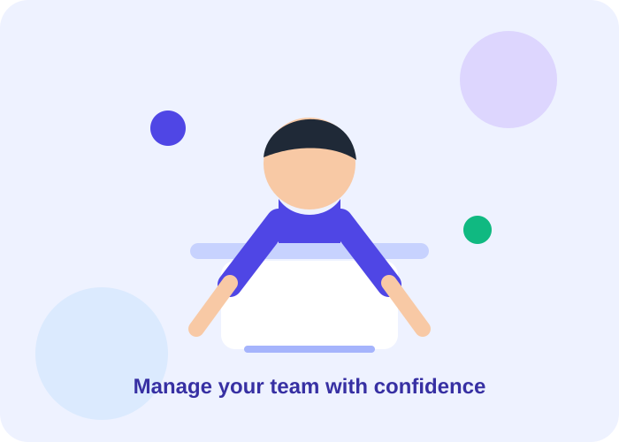

Employee Manager
Projet de gestion des ressources humaines
Employee Manager
Application web responsive pour centraliser les collaborateurs, les congés, le recrutement, la paie, la formation et les rapports RH.

Employee Manager répond au besoin de disposer d’un espace unique pour consulter les données du personnel et piloter les activités quotidiennes des ressources humaines.

Illustration de l’écran d’authentification et accès protégé aux espaces RH.Vue synthétique de l’effectif, des employés actifs, des départements et de l’âge moyen. Graphiques par département et par genre.
Indicateurs + graphiquesRecherche générale, filtres par département, statut et genre, pagination, affichage desktop/mobile et menu d’actions.
Voir · Modifier · SupprimerProfil détaillé avec coordonnées, informations personnelles et professionnelles, onglets et gestion de suppression.
Profil centraliséSuivi des offres, des candidatures et des entretiens dans un espace consacré au processus de recrutement.
Pipeline recrutementCalendrier mensuel navigable, demandes en attente, approbation/refus et historique des absences.
Calendrier interactifPrésentation de la masse salariale et des bulletins de paie pour faciliter le suivi administratif.
Suivi paieCatalogue de formations et suivi de la progression des collaborateurs.
Développement RHAnalyses par département, répartition par âge, effectif actif et export de rapport.
Analyse décisionnelleProfil, avatar, apparence clair/sombre, notifications, préférences et sécurité du compte.
ConfigurationVisuel d’accompagnement pour présenter l’expérience utilisateur et l’organisation de l’interface.Le projet est construit comme une application frontend moderne, organisée par composants, pages, services, contextes et types.